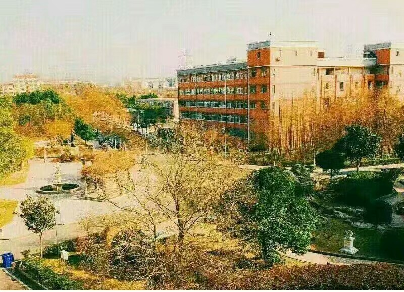

个人简介
家乡简介
我的课表
个人简介
大家好，我叫夏雨，来自中南大学计算机学院软件工程专业2004班。来自湖北孝感。
个人图片

我喜欢篮球，喜欢看NBA，目前忠实湖人球迷，湖人总冠军
家乡简介
我的家乡是湖北省孝感市安陆市。安陆市隶属于湖北省，由孝感市代管，为武汉城市圈重要组成部分，位于鄂中腹地，是楚文化发祥地，是历史上郧子国、安陆郡（安州）、德安府所在地，历史上安陆古城所在地。 [1]
安陆市国土面积1355平方公里，辖9镇4乡2个办事处1个经济技术开发区。截至2018年末，全市户籍总人口61.23万人。 [2] 2011年5月25日，安陆市被中国农业机械工业协会授予“中国粮油机械之都”称号。 [3] 2017年10月，被住建部命名为国家园林城市 [4] 。 2019年12月31日，入选全国农村创新创业典型县。


我的课表
我的大学课表